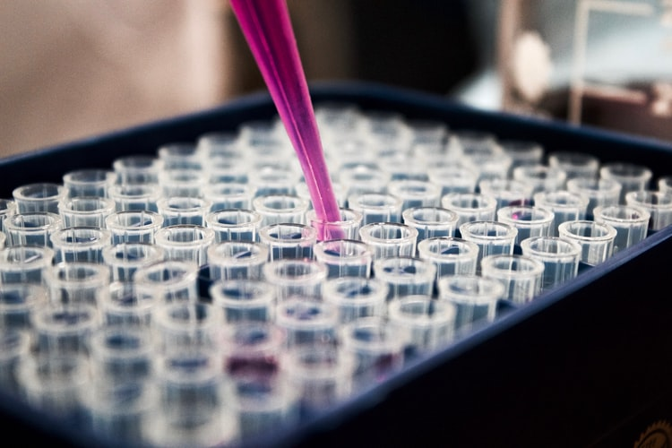
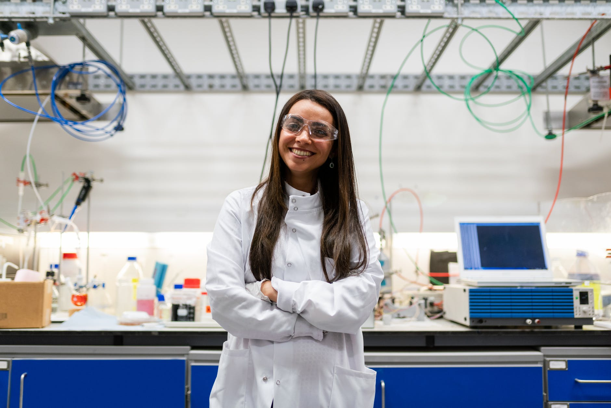
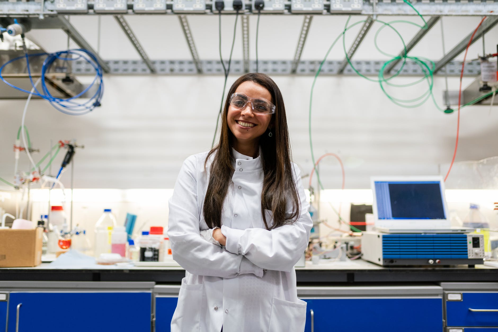

Our History!
2020 presented a unique challenge for medical personnel and patients everywhere. As a nurse, founder Casey David saw this firsthand. She and many of her colleagues could no longer see their usual patients in person, but Casey believed that they should still be able to get the proper care. So, as the country shut down, she collaborated with a skilled team in order to create a company that could provide a seamless transition from in-person medical care to telehealth. The result was Med-Dia, a service that combines technical know-how and services with a wealth of medical knowledge.

 


Casey David - Founder & CEO

Tracey Seabrook - Assistannt Director & Hosptial Administrator

Terry Hampton - Head of Marketing & Communications

Lindsey Woodham - Chief Financial Officer

Emery Arnesen - Healthcare Actuary

Marley Guerra - Telecommunications Network Engineer

Maria Ackerman - Chief technology Officer

Customer Service Representative